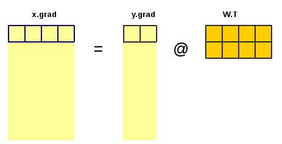
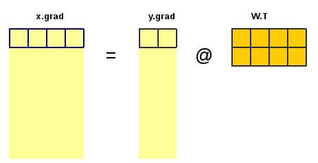

def lin_grad(x, w, b, y):
# y.g shoudl be available!
b.g = y.g.sum(dim=0)#/y.shape[0]
w.g = x.T @ y.g
x.g = y.g @ w.TLet’s have \(y = w \cdot x + b\). Application of the rules of differentiation is simple, e.g.
\[\frac{\mathrm{d}y}{\mathrm{d}x} = w , \quad \frac{\mathrm{d}y}{\mathrm{d}w} = x, \quad \frac{\mathrm{d}y}{\mathrm{d}b} = 1\]
The change in \(y\) is porportional to the change in \(x\). The bigger is \(w\), the bigger is the change of \(y\) for the same change of \(x\).
Let’s \(L = f(y) = f(y(x))\). Application of the chain rule is simple, e.g.
\[\frac{\mathrm{d}L}{\mathrm{d}x} = \frac{\mathrm{d}f(y)}{\mathrm{d}y} \cdot \frac{\mathrm{d}y}{\mathrm{d}x} = \frac{\mathrm{d}L}{\mathrm{d}y} \cdot w\] \[\frac{\mathrm{d}L}{\mathrm{d}w} = \frac{\mathrm{d}f(y)}{\mathrm{d}y} \cdot \frac{\mathrm{d}y}{\mathrm{d}w} = \frac{\mathrm{d}L}{\mathrm{d}y} \cdot x\] \[\frac{\mathrm{d}L}{\mathrm{d}b} = \frac{\mathrm{d}f(y)}{\mathrm{d}y} \cdot \frac{\mathrm{d}y}{\mathrm{d}b} = \frac{\mathrm{d}L}{\mathrm{d}y} \cdot 1\].
The multidimensional case is not so simple. Functions with multiple inputs and multiple outputs have multiple partial derivatives which need to be arranged and stored properly. Applying this for batches of data complicates the picture even more.
Derivative of a transformation
The derivative of a function (transformation \(\psi\)) with multiple inputs \(\mathbf{x} \in \mathbb{R}^M\) and multiple outputs \(\mathbf{y} \in \mathbb{R}^H\) is a matrix containing the partial derivatives of each output with respect to each input (the so called Jacobian of the transformation, \(\frac{\partial{\mathbf{y}}}{\partial{\mathbf{x}}} \in \mathbb{R}^{M \times H}\)). For example, if \(M=4\) and \(H=2\) we can write:
\(\mathbf{y} = \psi(\mathbf{x})\),
\(\mathbf{x} = \begin{bmatrix} x_1 \\ x_2 \\ x_3 \\ x_4\end{bmatrix}, \quad \mathbf{y} = \begin{bmatrix} y_1 \\ y_2 \end{bmatrix}\)
\(\frac{\partial{\mathbf{y}}}{\partial{\mathbf{x}}} = \begin{bmatrix} \frac{\partial{y_1}}{\partial{x_1}} & \frac{\partial{y_1}}{\partial{x_2}} & \frac{\partial{y_1}}{\partial{x_3}} & \frac{\partial{y_1}}{\partial{x_4}}\\ \frac{\partial{y_2}}{\partial{x_1}} & \frac{\partial{y_2}}{\partial{x_2}} & \frac{\partial{y_2}}{\partial{x_3}} & \frac{\partial{y_2}}{\partial{x_4}} \end{bmatrix}\)
The derivative of \(\mathbf{y = W \cdot x}\) with respect to \(\mathbf{x}\) is \(\mathbf{W}\), i.e. \(\frac{∂y}{∂x} = W\).
We should note that in neural networks the input and output features are arranged as raw vectors.
The derivative of \(\mathbf{y = x \cdot W}\) with respect to \(\mathbf{x}\) is \(\mathbf{W^T}\), i.e.
\[\frac{∂y}{∂x} = W^T\]
The chain rule
Let’s have \(y = x \cdot W + b\) and \(L = f(y)\)

The chain rule involves propagating the gradient of the loss layer after layer backward towards the inputs and parameters of interest. In our demonstration case in order to calculate the gradient of \(L\) with respect to the input \(x\) we need to have the gradient of \(L\) with respect to the output \(y\).
The shapes of the gradient is the same as the shape of the corresponding variable (parameter)
A gradient is attached to each variable and parameter of the model, i.e.
\(y.g = \frac{\partial{L}}{∂{y}}\)
\(x.g = \frac{\partial{L}}{∂{x}} = \frac{\partial{L}}{\partial{y}} \cdot \frac{\partial{y}}{\partial{x}} = y.g \cdot \frac{\partial{y}}{\partial{x}} = y.g \cdot W^T\)
\(b.g = \frac{\partial{L}}{∂{b}} = \frac{\partial{L}}{\partial{y}} \cdot \frac{\partial{y}}{\partial{b}} = y.g \cdot \frac{\partial{y}}{\partial{b}} = y.g\)
\(W.g = \frac{\partial{L}}{∂W} = ((\frac{\partial{L}}{\partial{y}})^T \cdot \frac{\partial{y}}{\partial{W}})^T = (y.g^T \cdot x)^T = x^T \cdot y.g\)
Notes:
- \(x\), \(y\) and \(b\) are row vectors.
- \(W\) is a weight matrix with \(m\) rows and \(h\) columns;
- \(x\) includes the \(m\) input features
- \(b\) is a bias with \(h\) elements;
- \(y\) has \(h\) features (or nodes).
- \(x\) and \(y\) represent input and output features (variables, nodes in the NN). Adding additional dimension (multiple rows) could represent multiple data samples. Inputs and outputs could be replaced by matrices \(X\) and \(Y\) where the last dimension gives the features (\(x\) and \(y\) for the corresponding data point);
 
 
Implementation and testing with code
Above equations are implemented in function lin_grad and tested in the following code
import torch
from torch import tensor
from matplotlib import pyplot as plt
%matplotlib inline# Generate test input and ouput data
N = 100 # Number of samples
M = 4 # Number of input features
H = 2 # Number of outputs
x = torch.rand((N, M))*10 - 5 # Input
k1 = 1
k2 = 1.5
k3 = 2
k4 = 2.5
k6 = 3.0
k7 = -0.5
W_true = torch.tensor([[k1, k1],
[k2, k2],
[k3, k6],
[k4, k7]])
b_true = torch.tensor([0, -1])
y = x @ W_true + b_true
W_true, y[:7](tensor([[ 1.0000, 1.0000],
[ 1.5000, 1.5000],
[ 2.0000, 3.0000],
[ 2.5000, -0.5000]]),
tensor([[ 11.8067, -2.0911],
[ -9.3647, -6.7345],
[ 3.9591, -7.5934],
[ 9.4930, 2.5319],
[ 2.0966, 13.3945],
[-12.2224, -16.5551],
[ 15.3866, 2.6479]]))plt.scatter(x[:,2], y[:,1])<matplotlib.collections.PathCollection at 0x7f15e44674c0>
# Generate random weights
w = torch.randn(M,H)
b = torch.zeros(H)
w, b(tensor([[ 0.7646, 1.0763],
[ 3.4034, -0.4162],
[-0.9498, 0.2595],
[-0.4765, 0.1934]]),
tensor([0., 0.]))In order to test the function lin_grad we need to calculate the gradient \(∂L/dy\) and save it in \(y.g\): - define model and calculate prediction - define and calculate loss \(L\) as simple mean squared error mse(y_pred, y_targ) - define and run mse_grad(y_pred, y_targ) - run lin_grad(x, w, b, y)
def lin(x, w, b): return x @ w + by_pred = lin(x, w, b)
y_pred[:5]tensor([[-10.3447, -0.6232],
[-10.6888, -4.0713],
[ 0.3219, 2.6095],
[-10.7518, 5.9173],
[ 13.8666, -1.1922]])def mse(y_pred, y_targ): return (y_pred-y_targ).pow(2).mean()loss = mse(y_pred, y)
losstensor(137.9371)def mse_grad(y_pred, y_targ): y_pred.g = 2 * (y_pred - y_targ) / y_targ.shape[0] / y_targ.shape[1]mse_grad(y_pred, y)Finnally, test if all dimensions in lin_grad match:
lin_grad(x, w, b, y_pred)Next test if the loss improves
w -= 0.1 * w.g
b -= 0.1 * b.g
y_pred = lin(x, w, b)
loss = mse(y_pred, y)
losstensor(5.1110)for i in range(20):
y_pred = lin(x, w, b)
loss = mse(y_pred, y)
mse_grad(y_pred, y)
lin_grad(x, w, b, y_pred)
w -= 0.01 * w.g
b -= 0.01 * b.g
print(loss)
w, b, W_true, b_truetensor(5.1110)
tensor(4.5152)
tensor(3.9969)
tensor(3.5457)
tensor(3.1527)
tensor(2.8100)
tensor(2.5109)
tensor(2.2498)
tensor(2.0215)
tensor(1.8218)
tensor(1.6469)
tensor(1.4935)
tensor(1.3589)
tensor(1.2406)
tensor(1.1365)
tensor(1.0448)
tensor(0.9638)
tensor(0.8923)
tensor(0.8289)
tensor(0.7728)(tensor([[ 0.9728, 0.9178],
[ 1.4296, 1.2903],
[ 1.8706, 2.7733],
[ 2.4438, -0.5472]]),
tensor([-0.0191, -0.0628]),
tensor([[ 1.0000, 1.0000],
[ 1.5000, 1.5000],
[ 2.0000, 3.0000],
[ 2.5000, -0.5000]]),
tensor([ 0, -1]))PyTorch autograd and backpropagation
We will use PyTorch automatic gradient calculation to check our algorithms. This involves using the build-in methods and parameters .backward() and .grad.
In order to apply PyTorch backpropagation and autograd we need to define a forward function that relates the inputs with the loss:
def forward(x, y):
y_pred = lin(x, w, b)
loss = mse(y_pred, y)
return lossloss = forward(x, y)
losstensor(0.7228)But this is not enough:
loss.backward()–> RuntimeError: element 0 of tensors does not require grad and does not have a grad_fn
Looks like a slot for saving the gradient to the corresponding inputs and model parameters should be required.
# Update gradients as above - manual backward - for comparison
# forward
y_pred = lin(x, w, b)
loss = mse(y_pred, y)
# backward
mse_grad(y_pred, y)
lin_grad(x, w, b, y_pred)
# Good to know: the parameters are not updated in the backward pass!# Require gradient to keep them with the data
for element in [x, w, b]:
element.requires_grad_(True)loss = forward(x, y)
loss.backward()losstensor(0.7228, grad_fn=<MeanBackward0>)from fastcore.test import test_closetest_close(x.g, x.grad)
test_close(w.g, w.grad)
test_close(b.g, b.grad)What is next?
The next step is to try to create a “proper” non-linear neural network.
The structure of a fully connected neural network with single hidden layer could be represented as follows:

A few more gradients need to be defined and calculated